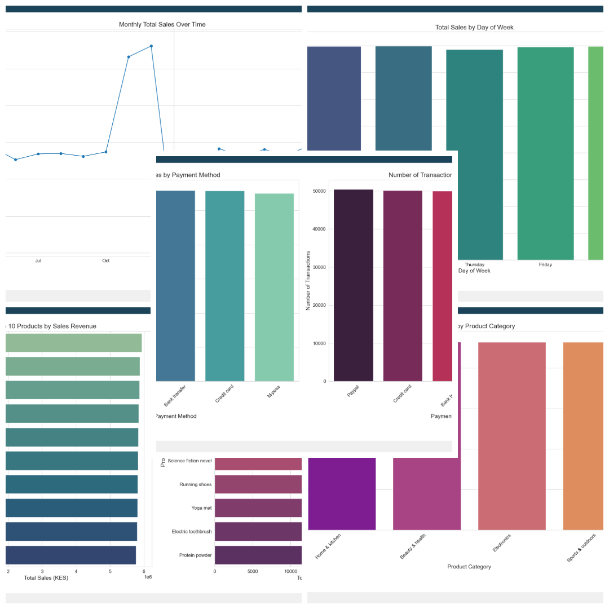
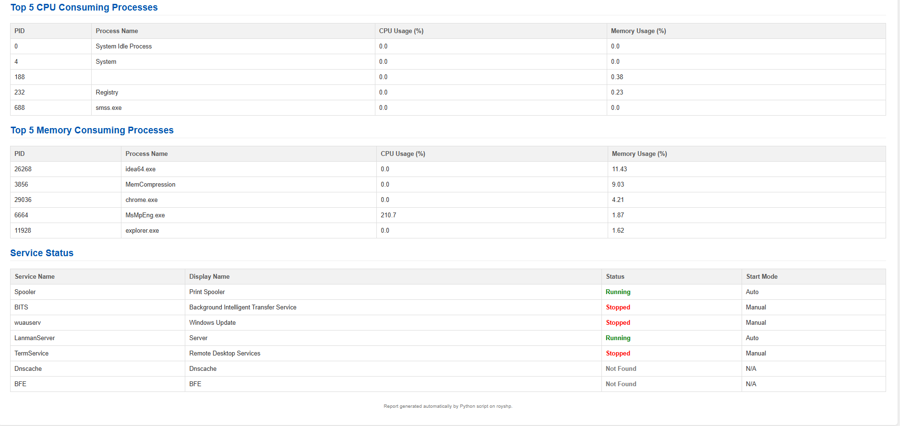
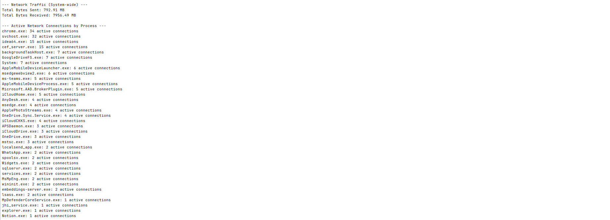

Hello, I'm Rodney Gitonga
Data Analytics Officer: Driving Business Value in Finance with Analytics & Business Intelligence.

About Me
I am a Data Analytics Officer specializing in transforming complex financial and operational data into actionable business insights to enhance operational efficiency. My expertise is focused on the intersection of data visualization, SQL optimization, and business process automation within the financial sector.
My core mission is to drive data-informed decision-making. I achieve this by architecting and optimizing robust SQL views and queries to ensure data integrity, and by developing dynamic, executive-level Power BI dashboards. My work directly supports strategic planning, regulatory compliance, and performance tracking across key banking units.
With a comprehensive background in data engineering principles and IT systems, I maintain a holistic view of the data lifecycle. I excel at diagnosing bottlenecks, streamlining reporting, and building automated solutions (Power Apps, Python) that directly contribute to enhancing uptime and efficiency across the organization.
Experience
Data Analytics Officer
GULF AFRICAN BANK | September 2025 – Present
- Managed and optimized ETL (Extract, Transform, Load) processes to ensure the timely and accurate delivery of data for reporting and analysis.
- Designed and built Power Apps solutions to streamline operations and automate workflows across different bank departments.
- Performed comprehensive data analysis to identify trends, forecast performance, and support strategic planning.
- Translated raw banking data into actionable visualizations, supporting executive decisions on P&L and risk.
- Developed and maintained the foundational data layer (views) used for major Power BI dashboards across the bank.
- Partnered with business units to define requirements and deliver custom Power BI solutions for performance tracking.
- Led the end-to-end data visualization process, from requirement gathering to dashboard creation, ensuring reports were tailored to meet the strategic needs of various business units.
Data Analytics Engineer Intern
GULF AFRICAN BANK | July 2025 – September 2025
- Built Microsoft PowerApps solutions to streamline branch-level processes, improving efficiency and user experience across bank operations.
- Designed and developed interactive Power BI dashboards to visualize key financial and operational metrics, enabling data-driven decision-making.
- Gained hands-on experience in integrating Power BI dashboards with MySQL servers, ensuring seamless data connectivity and real-time reporting.
IT Support Specialist Intern
GULF AFRICAN BANK | January 2025 – July 2025
- Provided responsive end-user support and resolved technical issues to ensure smooth day-to-day operations across banking systems.
- Delivered on-site and remote technical support for hardware, software, and peripheral devices across multiple departments.
- Assisted in the maintenance, configuration, and monitoring of enterprise systems including core banking applications and business information systems.
- Contributed to network troubleshooting and supported RESTful services in the organization’s internal applications.
- Supported the IT Service Desk by handling incident reports, logging issues, and escalating where necessary to improve resolution times.
- Participated in routine system updates, patching, and maintenance tasks, improving system performance and uptime.
OFFICE ACCOUNTANT & IT ASSISTANT
VOI WINNERS HOUSING COOPERATIVE SOCIETY LIMITED | May 2024 – January 2025
- Managed daily financial operations, including ledger reconciliation, billing, and budgeting processes.
- Oversaw real estate property management tasks, coordinating tenant interactions and lease documentation.
- Handled client liaison and customer service, addressing inquiries and providing administrative support to senior management.
- Led the IT infrastructure management for the cooperative, including network setup, administration, and hardware/software support.
- Designed and implemented digital communication strategies to improve engagement and streamline internal operations.
- Proactively troubleshot and resolved IT issues, ensuring minimal downtime and enhancing system reliability for daily business functions.
Junior Software Developer Intern
NUMERAL IOT LIMITED | June 2022 – October 2022
- Developed web applications using AngularJS, ensuring responsive and user-friendly interfaces.
- Installed, configured, and maintained Windows Server environments to support business operations.
- Managed web hosting environments using cPanel, including domain and email configurations.
- Provided ongoing website maintenance and technical support to ensure optimal performance and uptime.
- Performed hardware diagnostics, repairs, and general computer maintenance.
- Supported system-level troubleshooting, configuration, and optimization for enhanced reliability and performance.
Core Skillset
Analytics & Business Intelligence
- Power BI (Advanced Dashboarding & DAX)
- Data Analysis & Data Modeling
- Financial Analysis & Forecasting
- Data Storytelling & Visualization
- ETL & Data Warehouse Concepts
- Microsoft Excel (Advanced)
Databases & Data Warehousing
- SQL (Query Optimization, Views, Stored Procedures)
- MySQL & MongoDB
- Database Administration (Basic)
- Data Integrity & Validation
- Data Engineering Principles
Programming & Automation
- Python (Pandas, NumPy, Scikit-learn)
- JavaScript / AngularJS
- REST APIs & Integration
- Process Automation (Power Apps, Python)
Cloud & DevOps
- Oracle Cloud Infrastructure (OCI)
- Amazon Web Services (AWS)
- Git & Version Control
- Docker & Containerization
IT Systems & Support
- Windows Server & Active Directory
- Network Troubleshooting (TCP/IP, DNS)
- ITIL Principles & Service Desk
- System Hardening & Security
Soft Skills
- Clear Communication
- Problem Resolution
- Cross-functional Collaboration
- Adaptability & Learning
Data Analytics Portfolio: Impact & Insights
Explore my portfolio of impactful projects where I've leveraged SQL, Power BI, and Python to create innovative data solutions, focusing on business intelligence and efficiency gains.
1. Business Intelligence & Financial Analysis
Projects focused on deriving actionable insights, predictive modeling, and building high-impact dashboards.
Customer Segmentation & Sales Forecasting Analysis
This project leverages Python (Pandas, Scikit-learn) to conduct comprehensive e-commerce analysis. It processes transactional data for sales forecasting, product performance, and customer segmentation. Key Insight: Identified high-value customer groups using clustering for targeted marketing strategies.
Financial Data Visualization and Reporting
A simulated project demonstrating the full BI lifecycle: defining metrics, writing optimized SQL queries and views, and building interactive Power BI dashboards to visualize monthly P&L and operational risk metrics. Focus: Real-time data integrity and executive reporting.
2. Data Automation & System Efficiency
Solutions that automate data workflows, improve system reliability, and reduce manual reporting burden, directly supporting Uptime & Efficiency.
Streamlit Workflow & AI Integration Dashboard
A Streamlit application designed as a personal data hub. It integrates external APIs (CoinDesk, OpenWeather) and internal system data, featuring Google Gemini AI integration for automated news/document summarization. Impact: Centralized data access and improved information efficiency.
Automated Regulatory Compliance & Health Reporter
A Python script that automates the collection of critical Windows system metrics, generates a detailed, easily readable HTML report, and emails it (SMTP). This proactive monitoring tool ensures system health and facilitates timely regulatory compliance checks.
Real-Time Data Collection & System Monitoring Utility
A Python command-line application that uses `psutil` to log and monitor real-time system activity (network traffic, resource usage) into an SQLite database. This demonstrates foundational data collection, logging, and storage principles crucial for enterprise monitoring.
Google Drive Sync Script for Data Backup
A Python script utilizing the Google Drive API to ensure continuous synchronization between a local folder and cloud storage. Impact: Automates critical data backup and integrity checks, essential for disaster recovery planning and data governance.
3. Software Development & Web
Showcasing foundational full-stack and API development skills.
Terminal REST Client Project
A simple, terminal-based REST API client implemented in Python (Requests Library). This tool allows for lightweight API testing and interaction directly from the command line, demonstrating competency in backend communication protocols.
SHOP YETU3D Website Project (Django)
A full-stack web application built with Python/Django for ordering and requesting custom 3D printed items. Demonstrates database-driven development, user interaction handling, and payment gateway integration principles.
AmarahDhow Website Project
A front-end website showcasing trip booking and scheduling for sailing in the Coast of Kenya. Focuses on responsive design and user experience using core web technologies.
Education
Bachelor of Science in Information Technology
Zetech University | 2019 May – 2024 November
Kenya Certificate of Secondary Education
Chania Boys Highschool | 2015 – 2018
Licenses & Certifications
Focusing on Data, Cloud, and SQL expertise.
Associate Data Engineer
DataCamp
SQL Query Optimization for Beginners
Simplilearn
Data Analytics Essentials
Cisco Academy
Power BI for Beginners
Simplilearn
SQL for Data Analysis
Simplilearn
Python for Data Analysis
Simplilearn
Oracle Cloud Infrastructure 2025 Architect Associate
Oracle
Investment Risk Management
Coursera Project Network
Mastery Certified Data Management Professional (CDMP) -Associate
Udemy Academy
Introduction to ITIL® V4
Simplilearn
The AWS Technical Essentials
Simplilearn
Endpoint Management & Security
ManageEngine
Endpoint Security
Cisco Academy
CGRC- Governance, Risk and Compliance Certification
Udemy Academy
Digital Safety and Security Awareness
Cisco Academy
English for IT 2
Cisco Academy
IT Customer Support Basics
Cisco Academy
Networking Devices and Initial Configuration
Cisco Academy
JavaScript Essentials 2
Cisco Academy
Blog
Welcome to my blog, where I share insights, challenges, and solutions from my projects. Here you'll find deeper dives into the technologies I use, the problems I solve, and the lessons I learn.
Building My Personal Automation Dashboard with Streamlit and Python
In this post, I'll walk you through the creation of my Personal Automation Dashboard, a Streamlit-based application designed to centralize various daily tasks and information feeds. From tracking cryptocurrency prices to summarizing news with Google Gemini, this project showcases how Python can be leveraged for powerful personal automation.
Read MoreUnderstanding Data Logging: My Real-Time System Monitor Project
Dive deep into the intricacies of foundational data logging with my Real-Time System Monitor. This Python application demonstrates key skills in data collection (psutil), storage (SQLite), and cross-platform compatibility, crucial for building reliable data pipelines.
Read MoreAutomating Daily Health Checks: The Automated Compliance Reporter
Learn how I built the Automated Health Reporter, a Python script that automates the collection of critical system metrics on Windows, generates detailed HTML reports, and emails them. This post covers secure email configurations and data gathering techniques essential for proactive IT management.
Read MoreGet In Touch
I'm always open to new opportunities and collaborations where I can apply my data analytics and business intelligence expertise. Feel free to reach out!
rodneyroygitonga@gmail.com
0705762775
Nairobi, Kenya